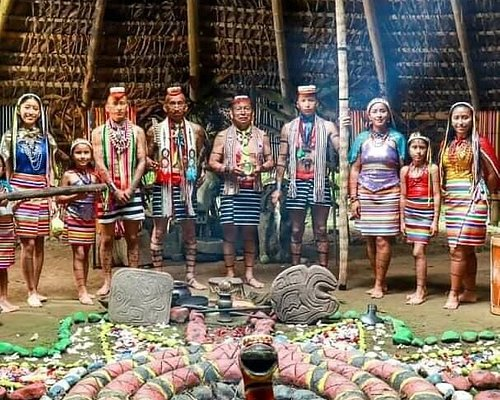

Actividades
-
Actividad Turismo STO DGO
Ruta De Las Cascadas
-
Actividad Turismo STO DGO
Rafting entre rios y vegetacion exotica
-
Actividad Turismo STO DGO
Contacto con la cultura Tsáchila
 -
Actividad Turismo STO DGO
Aventura en Cascadas
Agenda de actividades
-
27, Oct, 2023 Santo Domingo De Los Tsáchilas
OCTUBRE: Feria Asogan-SD.
-
04, Nov, 2023 Santo Domingo De Los Tsáchilas
NOVIEMBRE: BMX
-

08, Nov, 2023 Santo Domingo De Los Tsáchilas
NOVIEMBRE: Feria Gastronomica-Chocolate SD
-
19, Nov, 2023 Santo Domingo De Los Tsáchilas
NOVIEMBRE: Ciclopaseo Familiar.
-
22, Nov, 2023 Santo Domingo De Los Tsáchilas
NOVIEMBRE: Desfile Intercultural
-
30, Nov, 2023 Santo Domingo De Los Tsáchilas
NOVIEMBRE: Orquesta Sinfonica SD